CRISPR-Seq Workflow Documentation¶
Sequencing the predicted cut sites of CRISPR/cas9 experiments is an effective method of validating the CRISPR/cas9 system is creating loss-of-function (LOF) mutations. Abundant LOF allele fractions indicate sufficient Cas9 activity, guide efficiency, and tolerance to LOF mutation. Sequence analysis of predicted cut sites also facilitates studying the complex population dynamics of CRISPR/cas9 edited cells under positive or negative selection.
The CRISPR-Seq analysis workflow inputs single-end targeted sequencing reads that span predicted CRISPR/cas9 cut sites and outputs an analysis of LOF allele fractions and detailed indel descriptions. The CRISPR-Seq algorithm is more accurate than traditional indel callers at detecting large indels (>20bp) by using the predicted cut sites based on gRNA sequence which are unique to CRISPR/cas9 experiments. Convient options for running the analysis pipeline exist for both computational and laboratory scientists.
Why use CRISPR-Seq?¶
High accuracy
- Improved detection of large indels (>20bp) using predicted cut sites
Run with FireCloud
- Easy to use web interface for experimentalists
- Cheap (2 GB FASTQ file costs approximately $0.40 for computation and $0.33 per month for storage)
- Billing is managed by Google Cloud services
Simple inputs
- single-end reads in FASTQ form
- barcode annotation (multiplex only)
- gRNA annotation
- negative controls
Comprehensive output
- aligned bam files per sample
- characterization of all indels that overlap a predicted cutsite
- quantification of indel reads versus total reads for each sample/target pair
- statistical significance of indel allele fractions
- QC of indel size detection accuracy per target
- indel distribution plots per target
- sunburst plots to investigate population dynamics
Open source
- Docker image with all source code
- Option to run workflow with Snakemake
Algorithm Description¶
The algorithm is fine-tuned for detecting indels in 300nt single-end reads where the predicted gRNA binding site is near the center of the read.
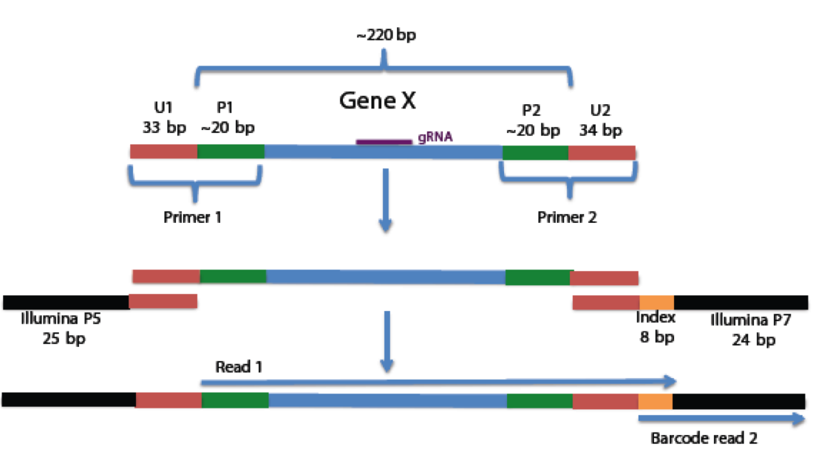The alignment is a two step process. First, a basic Smith-Waterman alignment identifies wild-type reads and small indels. Second, a search for reads with fragments that have high quality mappings to the reference either before or after the 50bp region around the predicted cutsite is used to identify reads with large indels.
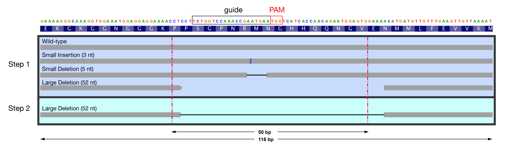
{kind=link}
Running CRISPR-Seq¶
FireCloud is the recommended method of running CRISPR-Seq for all users who don’t need to modify the workflow. For users who need tweak the execution of tasks or have a different preffered computation environment, a Docker image is available with all source code.
FireCloud Workflow¶
FireCloud is a cloud-based genomics anlaysis platform developed at the Broad Institute. Billing is handled by the Google Cloud Platform, allowing FireCloud to be accessible to users external to the Broad Institute.
Register a FireCloud Account¶
First, register for FireCloud using the FireCloud portal. This step only requires a Google account, such as Gmail.
Second, create a Google Billing Account and attach it to the FireCloud account following these instructions. Google offers promotional credit for new accounts so new users can try CRISPR-Seq for free.
Create a Workspace¶
From the FireCloud portal, create a new workspace by clicking on the
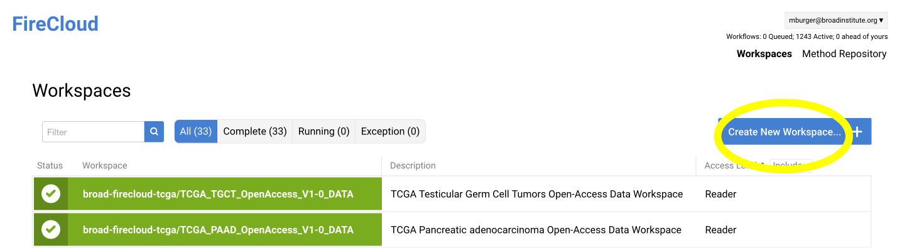Create New Workspacebutton in the upper right corner of the main page. Workspace names within the same billing project must be unique so if you share the billing account with others, you might want to include your username in the workspace name, e.g.CRISPRseq_<username>.After creating the workspace, the summary tab will be displayed. In order to run the CRISPR-Seq analysis, the method definition must be imported into the workspace. Move to the
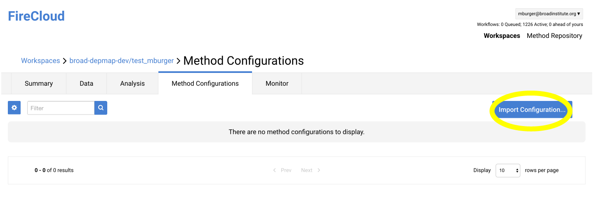Method Configurationstab and selectImport Configuration....Enter “crisprseq” into the search field and select
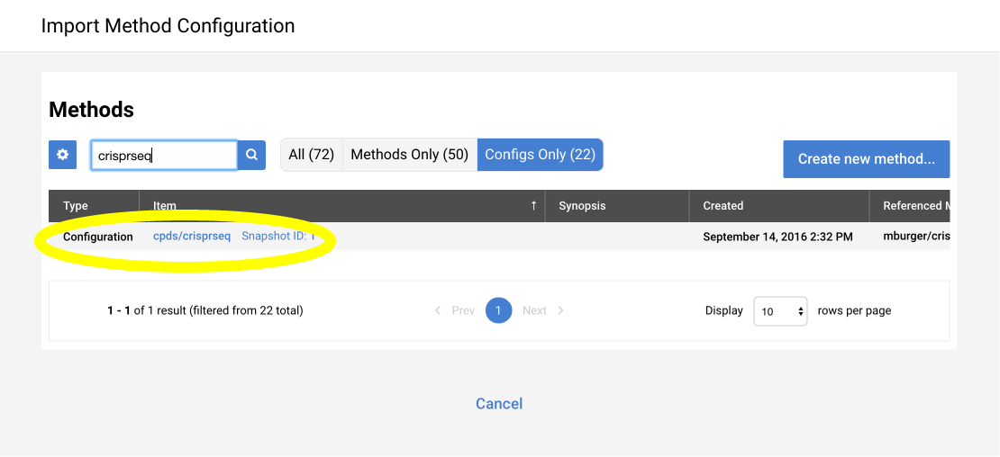Configs Only. Select the most recent snapshot of the cpds/crisprseq and import it with the default namespace.When returning to FireCloud at a later time, use the filter on the main page to search for the workspace name and return to the summary tab.
Using Google Bucket¶
From the summary page of the FireCloud workspace, a link to the Google bucket associated with the workspace is displayed on the right side of the page. User files required for the analysis must be uploaded to this bucket.
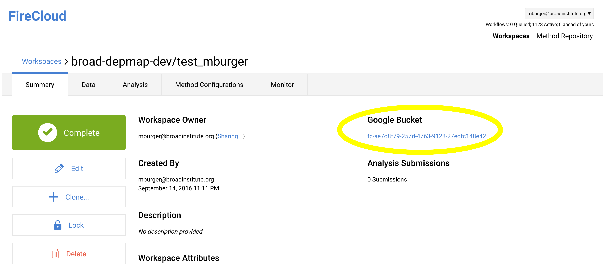Clicking on the bucket ID on the FireCloud workspace summary opens the Google Cloud Platform web interface where files can be uploaded directly.
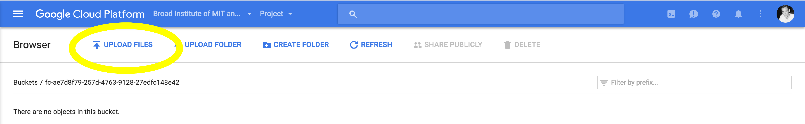
Upload FASTQ Files¶
If the FASTQ files are on a local machine, it might be easiest to upload the files directly to the bucket using the web interface. However, if the files are not local, the gsutil from the `Google Cloud SDK <https://cloud.google.com/sdk/>`_has a function to move files directly to the bucket using the command line:
gsutil cp *.fastq gs://<bucket>Broad Institute users have the
.google-cloud-sdkDOTKIT available for use on shared Broad servers that includes thegsutilfunction. One could write a simple script to transfer all fastq files in a directory to a Google bucket:#!/bin/bash #$ -cwd #$ -q long #$ -N googlebucket #$ -l m_mem_free=2g source /broad/software/scripts/useuse reuse .google-cloud-sdk gsutil cp *.fastq gs://<bucket-ID>/Assuming the script is saved as
bucket.sh, Broad users could then submit to UGER to execute:$ use UGER $ qsub bucket.sh
Upload Multiplex Barcodes¶
The barcode annotation is a two column, comma separated text file with the sample name in the first column and the barcode in the second column. Sample names must be unique and contain only alphanumeric characters, underscore, and hyphen. Here is an example of a barcode annotation table with 10 samples:
BC_1 AAGAACTA BC_2 AACTTGTA BC_3 CCAGTGAT BC_4 TTGATGCG BC_5 GGTCGTGC BC_6 GGAGTGTA BC_7 TTAGACCG BC_8 CCGAACAT BC_9 GGTCCACG BC_10 GGCTCAAT Save the barcode annotation table as a .csv and upload it to the workspace Google Bucket.
Upload gRNA Annotation¶
The gRNAs used should be listed in a comma separated text file (.csv) with four columns; gene, strand, cut, and amplicon. Below is an example table for an experiment targeting four genes with one guide per gene. The column definitions are as follows:
gene: Any unique gene symbol identifier. If the same gene is targeted with multiple guides, say STAG2 is targeted with two gRNAs, the names should be something like STAG2_1 and STAG2_2.strand: Indicates whether the gene is on the forward or reverse strand using + or - respectively.cut: Specifies the Single base location representing the predicted cut site between the gRNA and the PAM in hg19 coordinates.amplicon: Range from start to end of sequencing amplicon using hg19 coordinates.
gene strand cut amplicon Gene1 + 10:112341797 10:112341673-112341888 Gene2 - 4:106155180 4:106155115-106155320 Gene3 - 20:30956834 20:30956741-30956945 Gene4 - 17:29422368 17:29422233-29422455 Save the gRNA annotation table as a .csv and upload it to the workspace Google Bucket.
Upload negative control annotation¶
Negative controls can be annotated in two forms; a list of samples, or a sample by gene matrix. If each negative control sample is a negative control for all target genes, the negative control samples can be listed with one on each line:
sample Sample1 Sample2 Sample3 Sample4 If negative control samples only serve as negative controls for particular gene targets, a binary sample by gene matrix can be used to indicate which sample/gene pairs are negative controls.
Gene1 Gene2 Gene3 Gene4 Sample1 1 1 0 0 Sample2 1 1 0 0 Sample3 0 0 1 1 Sample4 0 0 1 1
Add Data Entity to Workspace¶
The final required configuration file is simply a list of files that were uploaded to the workspace’s Google bucket. This includes the fastq and annotation files (barcode, gRNA, and negative control). Create a table with a single row and the following column headers:
entity:participant_id barcodes_list barcodes_fastq reads_fastq gRNAs controls ref_idxs ref_fasta USER_VARIABLE USER_FILE USER_FILE USER_FILE USER_FILE USER_FILE gs://seq-references/ensembl/hg19/seq/hg19_files.txt gs://seq-references/ensembl/hg19/seq/Homo_sapiens_assembly19.fasta The fields marked with
USERare specific to the experiment. Theref_idxsandref_fastafields are provided and constant for all experiments using the hg19 reference.
entity:participant_id: Unique experiment ID to differentiate workflow results within the workspacebarcodes_list: Link to the multiplex barcode annotation CSV file.barcodes_fastq: Link to fastq file containing read barcodes.reads_fastq: Link to fastq file containing reads.gRNAs: Link to gRNA annotation CSV file.controls: Link to negative control annotation CSV file.ref_idxs:gs://seq-references/ensembl/hg19/seq/hg19_files.txtref_fasta:gs://seq-references/ensembl/hg19/seq/Homo_sapiens_assembly19.fastaThe Google bucket format for links to files is
gs://bucketID/filename, where the bucketID is listed on the workspace summary page and the filename is user defined.Given a barcode annotation that was named
AU6R0_barcodes.csvby the user and the bucket pictured above, the link would begs://fc-ae7d8f79-257d-4763-9128-27edfc148e42/AU6R0_barcodes.csv.Once the table is complete, save it as a tab delimited text file and import it as a Data entity into the workspace using the Data tab within the workspace.
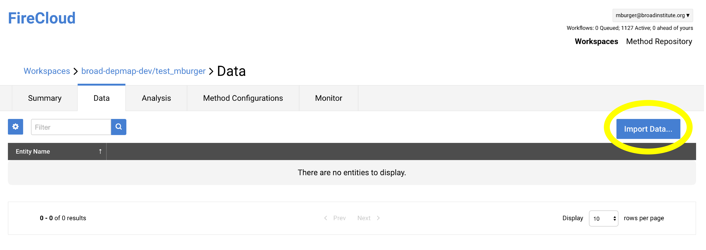
Launch Analysis¶
To run the workflow, navigate to the
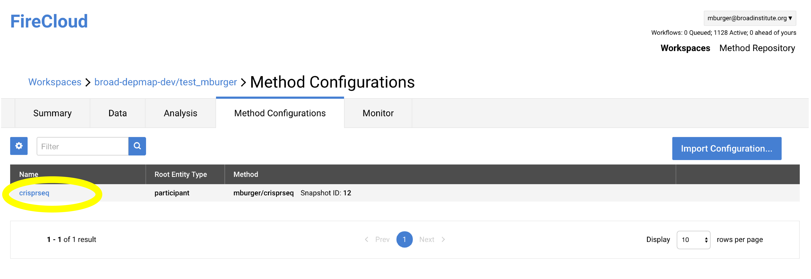Method Configurationstab of the workspace and select thecrisprseqmethod.From method configuration view select
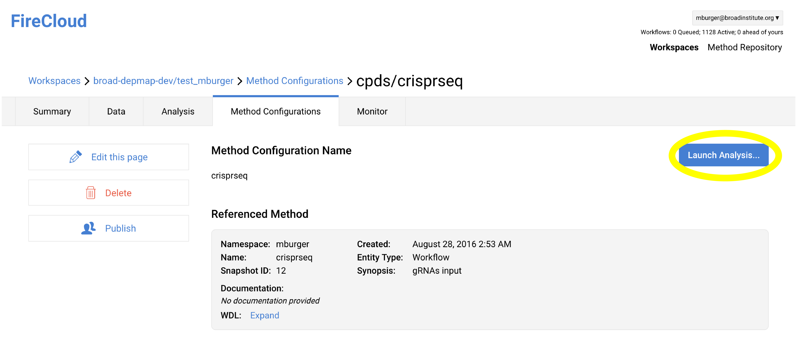Launch Analysis....Select the Data entity to run the workflow on, and launch the analysis.
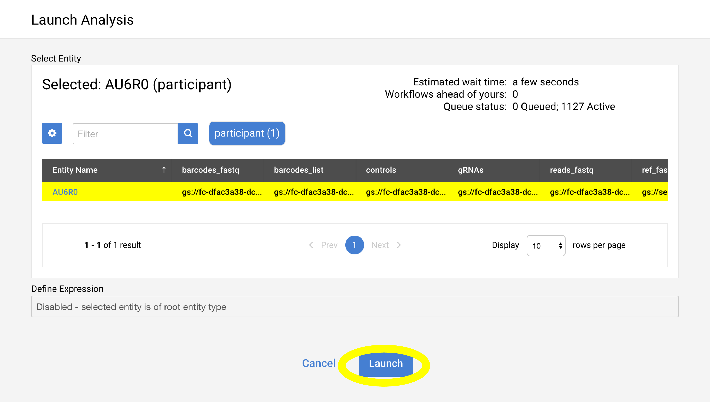
Monitor Analysis¶
Refresh the
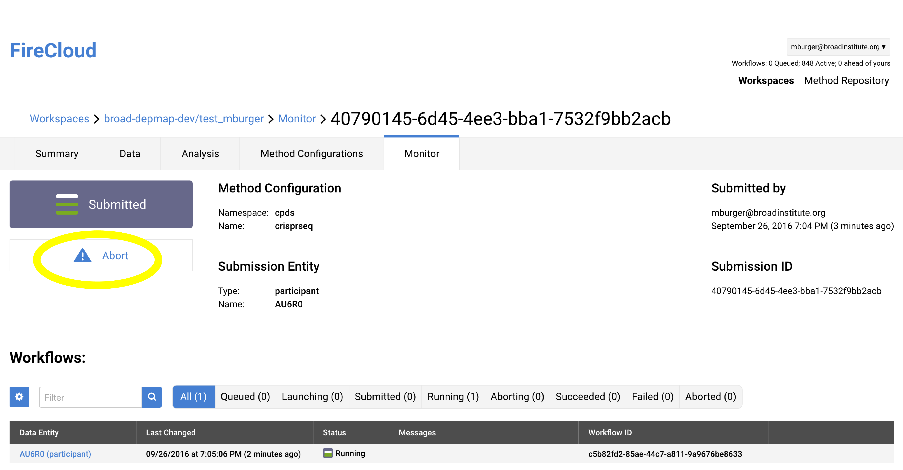Monitortab of the workspace to make sure the analysis is running. A typical 2GB FASTQ file takes less than 2 hours to finish analyzing. In this example, if the analysis were to exceed a 4 hour time period, it is recommended to abort the analysis to avoid excess billing.
View Results¶
When the analysis is finished new columns will be added to the Data Entity. Clicking on the link in the table will take you to the Google Bucket with the output files. Descriptions of the outputs can be found here (ref).
Citing¶
Tothova Z, Krill-Burger JM, Popova KD, Landers CC, Sievers QL, Yudovich D, Belizaire R, Aster JC, Morgan EA, Tsherniak A, Ebert BL. Multiplex CRISPR/Cas9-Based Genome Editing in Human Hematopoietic Stem Cells Models Clonal Hematopoiesis and Myeloid Neoplasia. Cell Stem Cell. 2017. 21(4): 547-555. PMID:28985529
Help¶
Please contact mburger@broadinstitute.org with any questions.